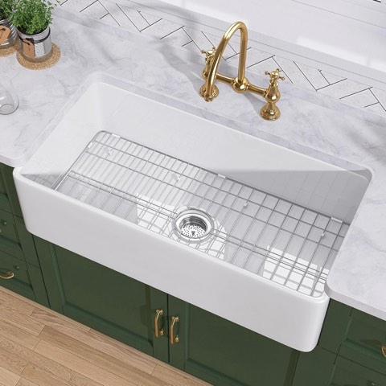

A farmhouse sink is one of the most expensive single decisions in a kitchen renovation, and one of the hardest to undo once it's installed.
Material, size, mount style, and bowl configuration all matter more here than they do for a standard drop-in sink.
This covers what actually goes into getting that choice right.


TUKTUK 33 Inch White Fireclay Farmhouse Kitchen Sink, Apron Front, Single Bowl
Shop on Amazon1. Styling a Farmhouse Sink in a Modern Kitchen
Pairing it with sleeker, more contemporary hardware and fixtures lets the sink anchor the space without making the whole kitchen feel dated.
This mix-and-match approach is exactly why farmhouse sinks have stayed relevant well outside strictly farmhouse-styled kitchens.
2. What Installation Actually Involves
A farmhouse sink's weight and exposed front usually require cabinet modifications that a standard drop-in sink never needs, which is worth factoring into both budget and timeline.
This is one project where hiring a professional, rather than attempting a full DIY install, tends to be the safer call given the structural stakes.
3. Don't Skip the Accessories
A fitted cutting board, a bottom grid, or a built-in colander all extend a farmhouse sink's usefulness well past basic washing.
These are worth planning for before installation, since retrofitting accessories around an already-set basin is far more limited.
4. Drain Placement Is Easy to Overlook
A center drain keeps plumbing simple and symmetrical, which is the more common and generally easier choice.
An offset or rear drain frees up more usable basin space, at the cost of slightly more complex plumbing underneath.
5. Single Bowl or Double Bowl
A single bowl offers maximum space for large pots and baking sheets, which matters more for anyone who cooks often and at scale.
A double bowl allows one side for washing and one for rinsing or drying, better suited to a household without a dishwasher doing most of that work.
6. Apron-Front vs. Flush Mount
A traditional apron-front install extends the sink's front panel slightly forward of the cabinetry, which is the classic farmhouse look most people picture.
An undermount or flush install sits the sink closer to the counter's edge, for a cleaner, more streamlined transition between counter and basin.
7. Size Deserves Real Thought
A too-large sink can overwhelm a small kitchen's counter space, while a too-small one defeats the deep-basin purpose a farmhouse sink is chosen for in the first place.
Measuring the actual cabinet opening, not just eyeballing it, avoids the single most common and most expensive mistake in this entire decision.
8. Material Matters More Than It Seems
Fireclay brings a classic, glossy look and genuine durability, though it comes with real weight and a higher price point.
Enamel-coated cast iron offers a similar classic look at a somewhat gentler cost, with a coating that can chip if it's treated carelessly over time.
Stainless steel is the most budget-friendly and low-maintenance option, trading some of that classic farmhouse warmth for practicality.
Copper brings real character and a living, evolving patina, appealing to anyone who wants the sink to visibly age rather than stay static.
9. What a Farmhouse Sink Actually Is
Defined by its exposed front panel, which sits forward of the cabinetry instead of hiding behind a countertop lip, a farmhouse sink reads as a visual anchor more than any other kitchen fixture.
That exposed front is also exactly why the material choice matters more here than for a sink nobody ever really sees.
Is a Farmhouse Sink Worth It?
For anyone who cooks often and wants a genuine visual anchor in the kitchen, the investment tends to pay off well beyond the sink itself.
Material, size, and mount style deserve real research before committing, given how disruptive it is to change course after installation.
Get those three decisions right, and the sink becomes the detail the whole kitchen gets built around.